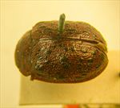
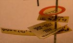
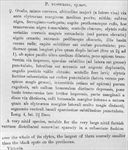

Click on images to enlarge
.jpg){kind=link}

Paropsis pustulosa type specimen
.jpg){kind=link}

Paropsis pustulosa type specimen, labels
{kind=link}

Paropsis pustulosa, description
Name
Trachymela pustulosa (Blackburn, 1896)
Type specimen
Location: BMNH
Label data: “Type” (red-bordered circle), “6154 T Vict.”, “Blackburn coll. 1910-236.”, “Paropsis pustulosa Blackb.”
HCE/BL = 16.8% (estimated from photo of type specimen)
Original description
[Original description shown in figure, translated from Latin using ChatGPT] Female. Oval, moderately convex; the greatest height (seen from the side) situated just before the middle of the elytral margin; shining; underside black, variegated with ferruginous. Head and prothorax reddish; the latter with four transverse black spots.
Scutellum dark. Elytra reddish, ornamented with large rounded black verrucae arranged somewhat in rows (but only slightly raised). Antennae and legs dark, the bases of the antennae reddish. Head finely and rather densely punctured. Prothorax broader than long in the ratio of nearly 2½ : 1, widened from the apex to a little beyond the middle, scarcely transversely impressed behind the anterior margin; punctures sparse and fine on the disc (rather coarse toward the sides); sides moderately rounded and rather narrowly flattened; posterior angles very obtuse.
Scutellum smooth. Elytra strongly punctured in somewhat irregular rows and rather densely so (punctures clearly coarser toward the sides); interstices slightly rugulose even at the apex; distinctly depressed beneath the humeral callus; base broadly but lightly transversely impressed; marginal portion scarcely distinct from the disc; inner margin of the humeral callus much farther from the lateral margin of the elytra than from the suture.
Basal ventral segment extremely sparsely and very finely punctured.
Length 4 lines (9 mm); width 2 4/5 lines (6.3 mm).Notes
From comparison with the type specimen, T. pustulosa is quite clearly the same species as Ta22.
References
Blackburn, T. 1896, "Revision of the genus Paropsis. Part I", Proceedings of the Linnean Society of New South Wales, vol. 21, no. 4, 637-693 (page 660).
Copyright © 2026. All rights reserved.